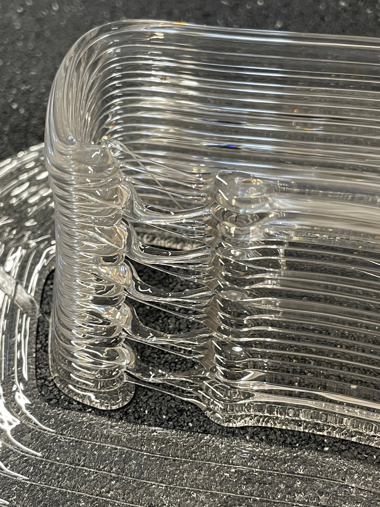
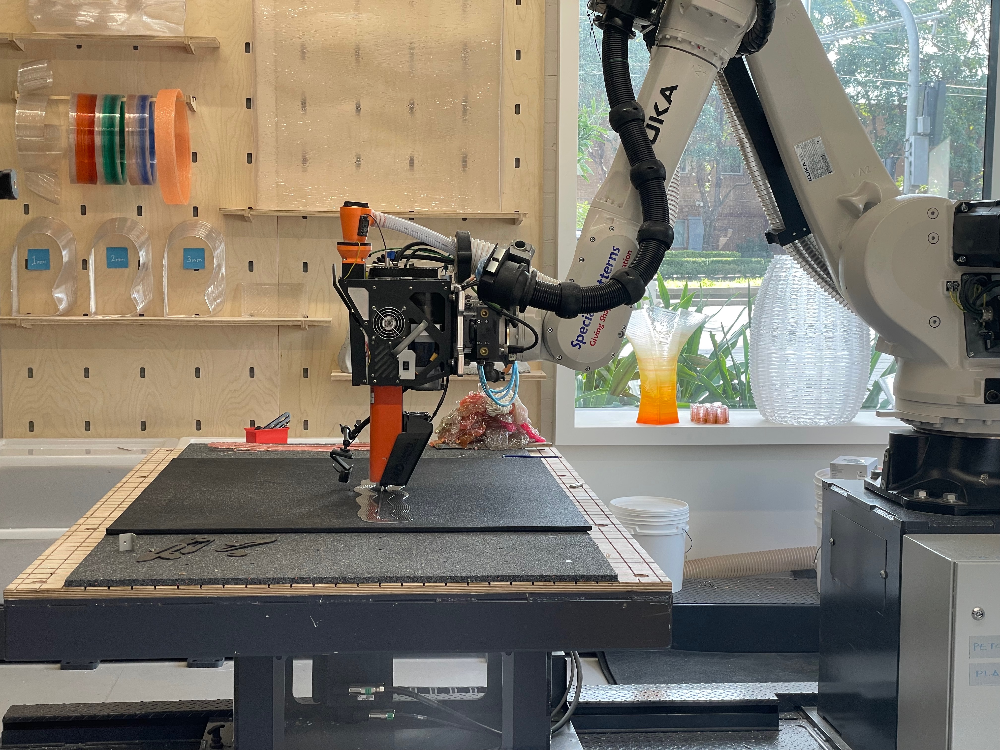
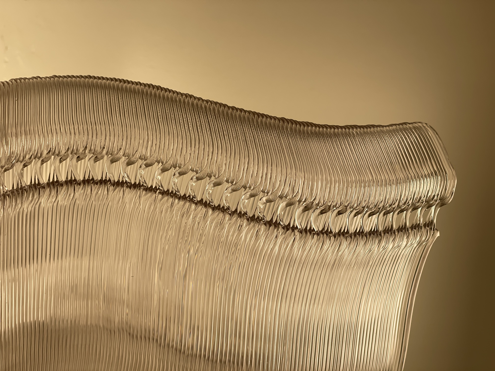
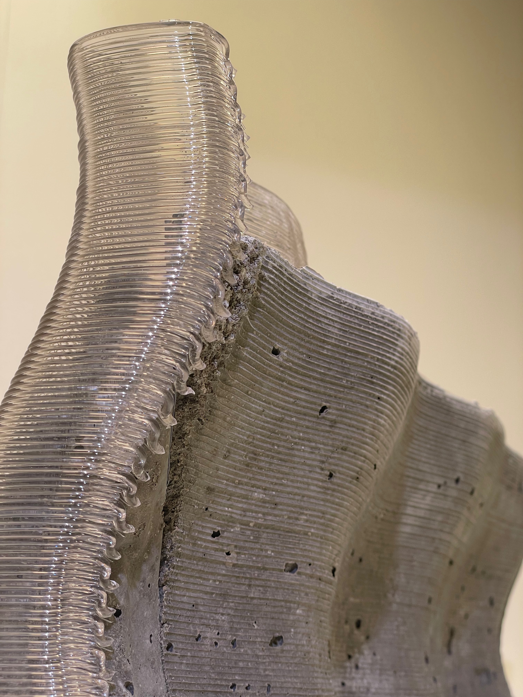
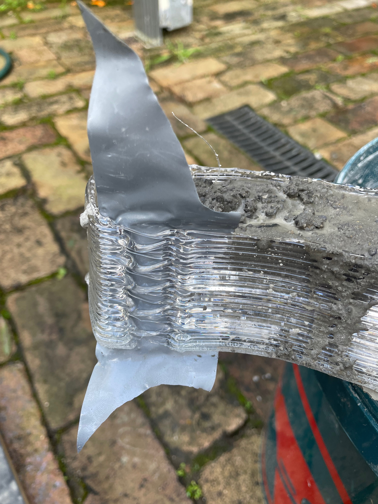

Project Overview
Complex free-form geometries are increasingly viable in architecture, yet the moulds required to cast them remain costly, wasteful, and notoriously difficult to remove without damaging the finished element. This graduation research project tackled that bottleneck head-on by reframing demoulding not as a destructive afterthought, but as a computational design parameter embedded directly into the fabrication workflow.
Working with UNSW's Design Futures Lab (DFL) KUKA KR70 industrial robot and MDPE10 pellet extruder, a parametric Grasshopper workflow was developed that embeds weakened "zipper seams" into 3D-printed PETG moulds at the slicing stage. By exploiting the extrusion system's constraints — specifically its inability to dynamically modulate extrusion rates without pausing — robot movement speed became the primary tool for creating controlled zones of under-extrusion. Combined with strategic extruder on/off commands that produce layered perforations, the result is a continuous seam strong enough to withstand the hydrostatic pressure of wet concrete during casting, yet fragile enough to peel open in under thirty seconds once the concrete has cured.
Full-scale casting trials validated the approach: moulds were stripped with nothing more than side cutters, and the concrete emerged completely intact with zero surface damage. The project contributes a replicable, scalable methodology that transforms demoulding into a designable, computationally controlled property of LFAM moulds — advancing sustainable, circular workflows for architectural fabrication.
Technologies Used
- KUKA KR70 industrial robotic arm with MDPE10 large-format pellet extruder
- Rhino 8 / Grasshopper for parametric design and custom toolpath generation
- KUKA Robot Language (KRL) for machine code output
- PETG thermoplastic pellets for mould fabrication (closed-loop recyclable)
- Ultimaker 3 with 0.8mm nozzle for small-scale prototyping and G-Code testing
- OBS (Open Broadcaster Software) with webcam capture for print documentation
- Custom Python tool for time-stamped print capture and timelapse generation
Research & Development
The project adopted a design-through-research methodology grounded in iterative prototyping, material experimentation, and computational design. The first phase involved establishing the technical and material constraints of the DFL's fabrication environment. PETG was selected over PLA (which degrades in concrete's alkaline environment), ABS (toxic fumes beyond the lab's ventilation capacity), and TPU (unavailable in pelletised form). A thirty-second-per-layer cooling target was calibrated to ensure dimensional stability, and the extrusion rate was derived from Lamont's (2024) research establishing the relationship between LIN speed and optimal deposition.
Several demoulding concepts were explored and discarded in early iterations: snap-fit joinery (limited to simple geometries), hinged moulds (too weak for hydrostatic pressure), layer-oriented delamination (infeasible without support material), and release agent channels (beyond pellet extrusion resolution). The perforated tear strip concept emerged as the most versatile approach, leading to two focused lines of experimentation.
Technique Development
The first technique — speed-ramped under-extrusion — held the extrusion rate constant while accelerating the robot along a defined seam location. After testing multipliers from 1.5× to 7×, a 7× baseline speed (approximately 0.2–0.35 m/s) produced seams that were 50–60% thinner than adjacent wall sections. These seams were predictable, repeatable, and mechanically reliable, though accessibility remained an issue once the mould was filled with concrete.
The second technique arose from a productive failure. Attempts to embed perforations through extruder on/off commands caused molten PETG to sag into the gaps, sealing them shut. However, this failure revealed two useful behaviours: with the extruder on during a fast move, thin weakened strands were produced; with it off, hair-thin non-structural threads formed. By alternating between these states at high speeds, a layered "floating" seam of discontinuous perforations emerged — a zipper-like weakness that matched the 50–60% thickness reduction of speed-ramped seams while providing much better accessibility for cutting tools.
Fabrication & Validation
The final parametric workflow combined both techniques into a single Grasshopper script that translates input geometries into structured KRL code, embedding seam placement, speed multipliers, and start/stop sequences directly into the toolpath. Full-scale PETG moulds were produced with seams covered in PVC tape to prevent slurry ingress during casting.
Once the concrete cured, seams were accessed with side cutters and the mould peeled away in under thirty seconds — no chisels, saws, or rotary tools required. The concrete emerged intact with zero surface damage. The taped seams did introduce minor surface finish variations where tape contacted the concrete, presenting an area for further research, but the primary aim of rapid, non-destructive demoulding was conclusively achieved.






Outcomes & Impact
The research demonstrates that demoulding can be parametrically encoded into LFAM workflows without compromising geometric fidelity or structural stability. The key innovation lies in reframing machine constraints as design opportunities — exploiting the pellet extruder's natural tendency to string and slump, rather than fighting against it. The validated workflow supports a circular fabrication model where PETG moulds can be rapidly removed, shredded, and re-extruded into new formwork with minimal material loss.
While tailored to the DFL's robotic setup, the underlying principles are broadly transferable to any pellet-based LFAM system, offering a replicable strategy for embedding demoulding performance into printed formworks at scale. The project was completed as part of the Bachelor of Design in Computational Design at UNSW, under the CODE3201 Graduation Project.
Future Directions
Further research directions include systematic studies of surface finish quality at seam interfaces, investigation of alternative thermoplastics (particularly TPU for intrinsic flexibility-based demouldability), scaling the workflow to full architectural elements with structural analysis integration, and exploring systems with real-time dynamic extrusion control for more precise and diverse demoulding features.